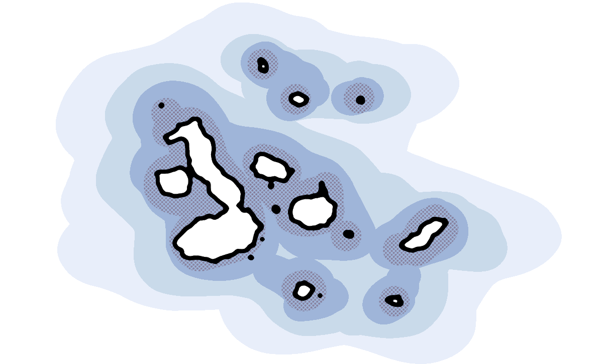
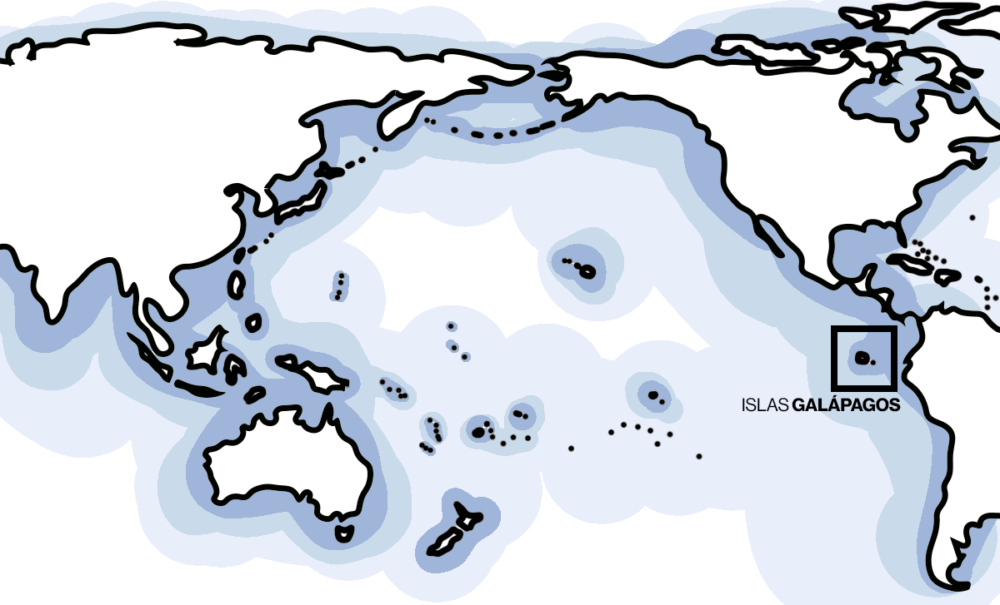
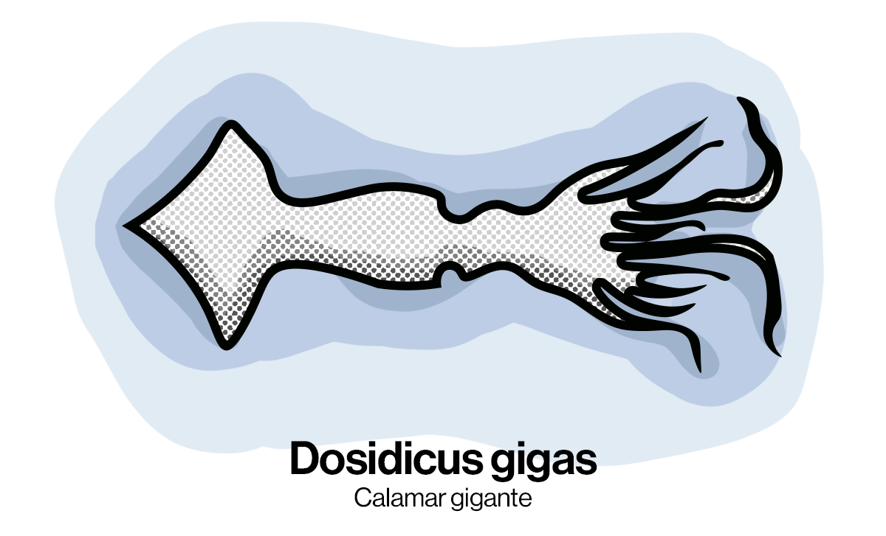
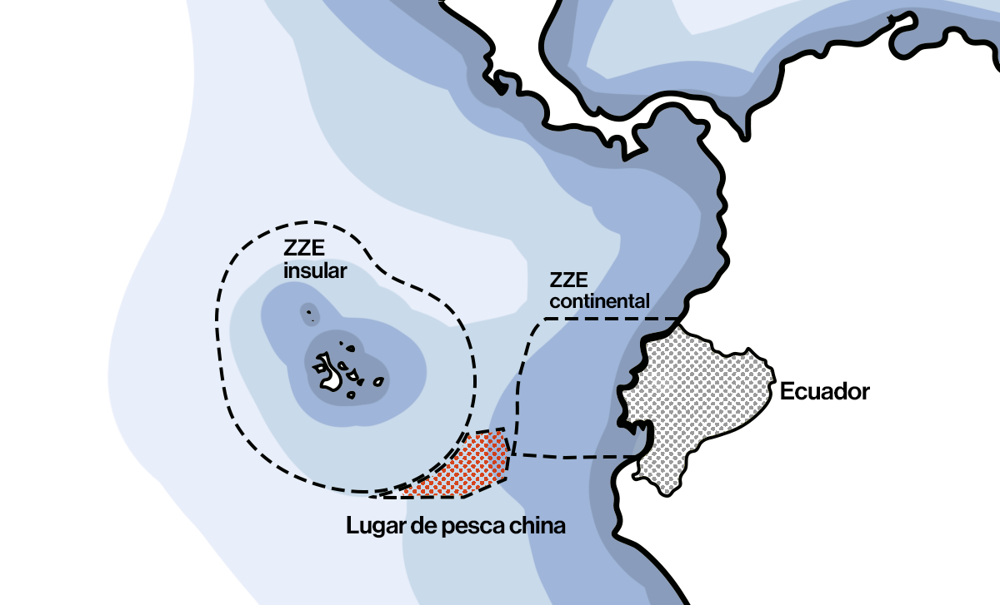

¿Qué hace China en las Galápagos?
escrito por: Wendy Cedeño /05 min read
Cientos de buques chinos se sitúan en los alrededores de las Islas Galápagos (pertenecientes a Ecuador) desde hace 4 años. Recorren miles de millas para poder estar en esta zona entre mayo y septiembre. Pero ¿qué hacen tantos buques cerca del archipiélago?

Las Islas Galápagaos, archipiélago bajo la soberanía de Ecuador. /©InspiredBy Magazine
Este 2020, la Armada Ecuatoriana alertó que desde el mes de junio, 274 buques chinos estaban en el límite de la Zona Económica Exclusiva de las islas Galápagos. El presidente de Ecuador, Lenín Moreno, presentó su malestar ante las autoridades asiáticas. Y es que ya son cuatro años consecutivos que las flotas chinas acechan las costas ecuatorianas. También ha presentado su preocupación Estados Unidos, ya que ha observado que la presencia China en América del Sur ha aumentado. El ministro de defensa ecuatoriano declaró que 149 embarcaciones habían apagado sus localizaciones por satélite. Además, el secretario de EE. UU. también criticó que las embarcaciones chinas cambiaban los nombres de sus buques.

Pesca internacional
A pesar de estos comportamientos sospechosos, las autoridades ecuatorianas no pueden hacer nada al respecto ya que los buques chinos se encuentran en aguas internacionales. También conocido como alta mar, se considera patrimonio común de la humanidad en la que hay libertad de tránsito y de pesca y, por lo tanto, las embarcaciones chinas tienen legitimidad para pescar en ese lugar.
Cientos de buques chinos se sitúan en esta zona desde hace 4 años. Recorren miles de millas para poder estar en esta zona entre mayo y septiembre y, de esta forma, pescar principalmente pota y calamares gigantes. Sin embargo, la sobrepesca de estos recursos supone graves consecuencias no solo por las pérdidas económicas de los pescadores nacionales, sino porque supone un peligro en el ecosistema.
China es uno de los países que más pescado consume, tanto que representa el 34% de pescado consumido por año. La gran demanda y el haber sobreexplotado sus costas hasta el hecho de reducir al 70% los calamares, hacen que sus barcos se vayan cada vez más lejos. Y es que en las últimas décadas el país asiático ha aumentado la flota pesquera hasta llegar a 16.966 buques. El gobierno chino incluso ha subvencionado la industria pesquera, tanto en el pago del combustible como en la construcción de nuevas flotas.

Según Alex Hearn -vicepresidente de la ONG Migramar-, los calamares gigantes es el sustento principal de los tiburones martillo. La sobrepesca del calamar gigante no es el único problema.
Por un lado, los buques chinos amenazan el ecosistema de Galápagos cuando arrojan plástico y residuos que llegan hasta la costa. Además, estos grandes buques arrastran nuevas especies que pueden perjudicar a la biodiversidad. Por otro lado, no pescan solamente calamares gigantes. Debido a que utilizan técnicas irregulares, pescan otros animales como tiburones, mantarrayas, atunes, tortugas, etc., especialmente si se realiza la pesca con palangre. La flota china se encuentra en aguas internacionales, así que no pescan en aguas pertenecientes a Ecuador. Sin embargo, suelen estar situadas en un lugar estratégico, un lugar donde pasan los animales migratorios que se mueven entre Galápagos y el continente, como los tiburones martillo.
De hecho, no sería la primera vez que los buques chinos pescan ilegalmente animales en peligro de extinción. En 2017, el navío Fu Yuan Yu Leng 999 fue detenido por las autoridades ecuatorianas con 300 toneladas de pesca ilegal, entre ellos los tiburones martillo -en peligro de extinción- y tiburones sedosos, así como atunes. Y es que debemos tener en cuenta que en China la sopa de aleta de tiburón es un manjar exquisito, reservado para ceremonias importantes. Desde el siglo X ha sido un plato para la clase alta, un símbolo de poder, pero en las últimas décadas este manjar se ha extendido a la población de clase media. La gran demanda del país asiático ha supuesto un aumento en la pesca ilegal y la disminución por todo el mundo del tiburón martillo.

Ubicación de la flota pesquera china. Fuente: Cancillería, Gobierno de Ecuador. /©InspiredBy Magazine
Zonas Económicas Exclusivas (ZEE)
Como todo Estado soberano, a Ecuador se le reconoce la Zona Económica Exclusiva. De acuerdo con lo establecido en la convención de las Naciones Unidas sobre el Derecho del Mar, todo Estado tiene soberanía y jurisdicción en la Zona Económica Exclusiva, área situada desde la base lineal -a partir de la cual se mide el mar territorial- hasta 200 millas marinas (370km). Debemos tener en cuenta que las Islas Galápagos pertenecen a Ecuador, y este archipiélago también posee las 200 millas de protección. Sin embargo, entre Ecuador y el archipiélago hay una distancia de 600 millas. Es por ello por lo que queda un espacio de 200 millas de aguas internacionales. Es en ese lugar donde se encontraron los 274 buques chinos. En el ámbito legal y político, China no está vulnerando ninguna ley. De hecho, la ley le ampara por ser alta mar.